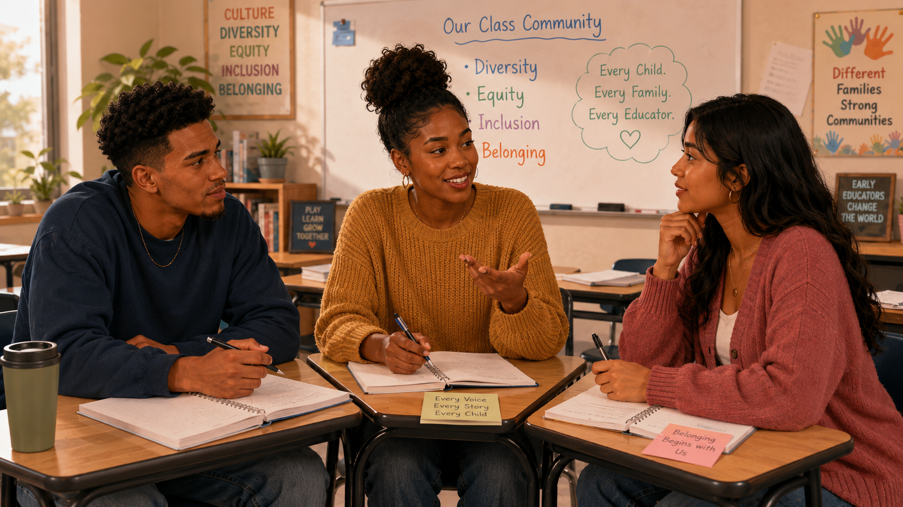

Kindness and equity
🔎 Choose the strongest response
Which statement best reflects the chapter’s main distinction?
Diversity, equity, inclusion, belonging, and responsive early childhood practice

Maya: “I’m interested, but honestly, I’m a little nervous. I don’t want to say the wrong thing.”
Jordan: “Sometimes I wonder if we make these topics harder than they need to be. Shouldn’t early childhood teachers just treat every child kindly?”
Aaliyah: “Kindness matters. But a child can be treated politely and still not feel like they belong.”
Maya: “So diversity is about recognizing differences. Inclusion is about making sure children and families actually belong. But equity still feels harder to understand.”
Jordan: “Is equity just another word for fairness?”
Aaliyah: “It is about fairness, but not always about giving everyone the exact same thing. Equity asks what each child or family needs in order to participate, learn, and feel respected.”
Maya: “Maybe this class isn’t about learning perfect words. Maybe it’s about learning how to notice, listen, and respond better.”
Which statement best reflects the chapter’s main distinction?
Match each term with the best meaning.
Three children are asked to participate in a storytelling activity. One uses spoken English, one communicates with an AAC device, and one is learning English. Which response best reflects equity?
Which outcome is most consistent with the chapter’s discussion of diverse early learning settings?
A child with a mobility disability is enrolled, but the dramatic-play area is inaccessible and the teacher regularly plans activities the child cannot join. Is the program inclusive?
Which educator action best supports inclusion of diverse families?
A classroom displays books and family pictures, but nearly every image represents the same race, language, family structure, and ability. What is the strongest response?
A family is always greeted warmly, but important notices are never translated into a language they understand. What is missing?
Which statement best integrates Esquivel Chapter 1?
Being kind is a starting point, but equity asks an educator to…
Equity requires attention to circumstances, barriers, access, and the support each child or family needs for a genuine opportunity.
Did your response mention noticing differences, listening to families, adapting the environment, or removing barriers?
Inclusion is not simply being present. It involves participation, support, respect, and belonging within the program community.